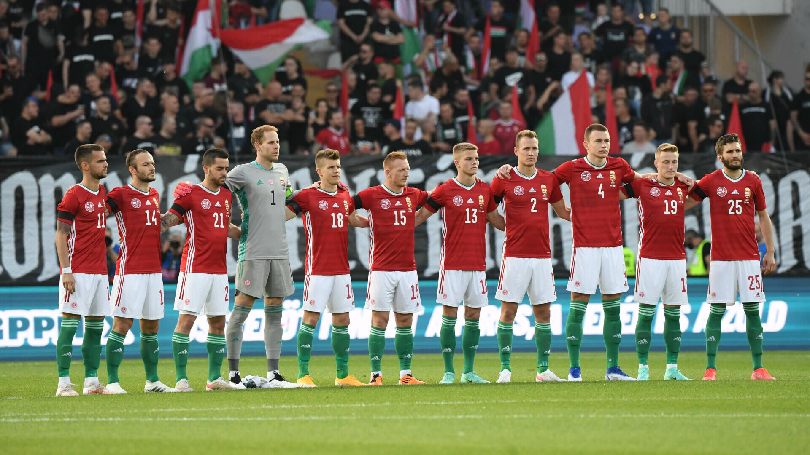

A foci világszerte való elterjedésében legfőbb szerepet a minimális felszerelés és az egyszerű szabályok játszották. A játék, mely később komoly sporttá vált, Angliából indult útjára, és hamar az egész világot meghódította. Magyarországon 1897-ben játszották le az első hivatalos foci meccset, innentől kezdve számítják a magyar labdarúgást. 1901-ben megalakult a Magyar Labdarúgók Szövetsége, azaz az MLSZ. 1902-ben a magyar válogatott is debütált, Ausztria ellen. A mérkőzést 500 néző látta a helyszínen, a válogatott vereséget szenvedett. Az 1910-es és 1920-as években gyorsan fejlődött a magyar foci és rövidesen világszinten is erős lett a válogatott. Az 1938-as olimpián ezüstérmes lett a csapat.
Aranycsapat
Ezután jött az Aranycsapat időszaka. Ekkor a világ legerősebb válogatott csapata a magyar volt. Az Aranycsapat 1952-ben megnyerte az Olimpiát, 1953-ban pedig hazai pályán verte meg az angol válogatottat 6-3-ra, az "Évszázad mérkőzésén". Ezután csalódás volt, hogy 1954-ben csak VB-ezüstérmes lett a csapat. Világbajnokságon azóta is a legjobb eredmény Magyarország számára ez a második helyezés.
Legfőbb válogatott eredmények
VB ezüstérem (1938, 1954)
EB bronzérem (1964)
Olimpiai játékok
Aranyérem (1952, 1964, 1968)
Ezüstérem (1972)
Bronzérem (1960)
Közelmúlt
Az Aranycsapat utáni évtizedekben csökkent a nemzeti csapat dominanciája, de így is olimpiai aranyérmet nyert 1964-ben és 1968-ban. Az 1980-as években az Európa-Bajnokságra már nem jutott ki az ország, de VB-re még igen. Az 1986-os mexikói világbajnokság volt máig az utolsó VB, melyen a magyar csapat is részt vett. Az 1990-es és 2000-es évek a válogatott leggyengébb időszaka, bármilyen felmutatható eredmény nélkül. Szerencsére azonban 2016-ban és 2020-ban (2021-ben) ismételten Európa-bajnokságra kijutott a csapat és helyt is állt. A magyar klubfutballban is az elmúlt pár év reménykedésre ad okot, hiszen a Ferencváros csapata az Európa-liga és a Bajnokok ligája főtáblájára is bejutott.
Az NB 1.
Az NB 1. azaz a Nemzeti Bajnokság 1901 óta kerül megrendezésre. Szervezője az MLSZ. Jelenleg 12 csapat küzd egymás ellen 33 fordulón keresztül. A bajnokság jelenlegi másik neve az OTP Bank Liga. A bajnokság legtöbbszörös bajnoka a Ferencvárosi TC (33x). A bajnokságról még többet megtudhat ha ide kattint.
A 2020/21-es bajnokság végeredményeInformációk
2020.08.15 - 2021.05.08
Gólkirály: Hahn János - 22 gól.
* Magyar Kupa győztese a 2020/21-es szezonban.
Helyezés
Csapat
Pontszám
1.
Ferencváros
78
2.
Puskás Akadémia
58
3.
Fehérvár
56
4.
Paks
50
5.
Kisvárda
46
6.
Újpest*
42
7.
MTK Budapest
42
8.
Mezőkövesd
42
9.
Zalaegerszeg
37
10.
Honvéd
37
11.
Diósgyőr
33
12.
Budafok
27
Mi várható a jövőben?
Marco Rossi szövetségi kapitány vezetésével kezd ismét magára találni a válogatott, ismét vannak nemzetközi szinten is elismert játékosaink, mint például Szoboszlai Dominik, Szalai Ádám, Gulácsi Péter, Willi Orbán vagy Szalai Attila. A 2021-ben megrendezett 2020-as EB-n helyt állt a legnehezebb csoportban is a csapat, viszont a szeptemberi világbajnoki selejtezőn a játék képe közelében sem volt a júniusban látottakhoz. Az angolok és lengyelek elleni játék ismételten tetszetős volt, viszont ennek ellenére sem jutott ki a csapat a 2022-es katari vb-re. Marco Rossi együttese 2022 nyarán a Nemzetek Ligája A-divíziójában Olaszország, Németország és Anglia ellen lép pályára, ezeken a meccseken ismét bizonyíthatnak a magyar futballisták.
Klubszinten a Ferencváros nemzetközi kupa szereplése is bizalomra adhat okot, hiszen több egymást követő évben is az európai főtáblákon játszhat, amely pár évvel ezelőtt elképzelhetetlennek tűnt. Összeségében elmondható, hogy a sokszor szidott magyar foci, az elmúlt pár évben sokszor okozott örömet a szurkolóknak és jó úton van, hosszú idő után újra.
A magyar válogatott a Ciprus elleni barátságos meccsen - 2021.06.04